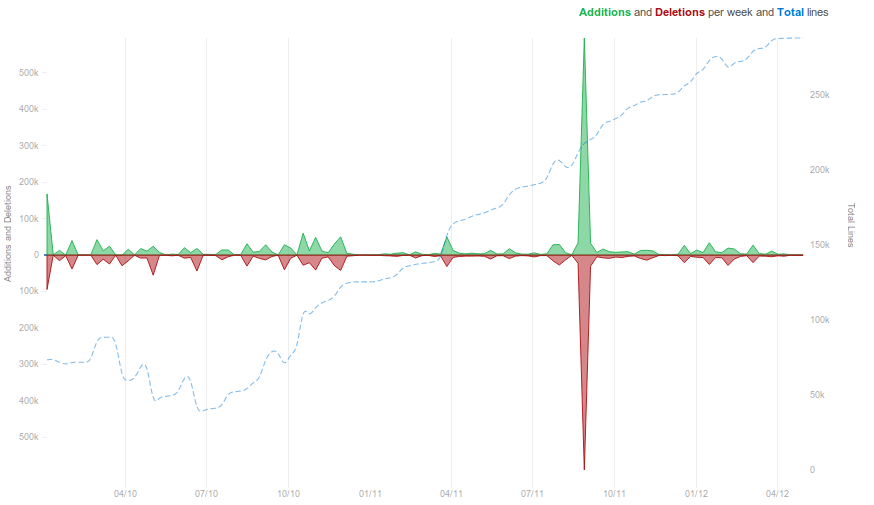

Yesterday, we released version 0.11 of the scikit-learn toolkit for machine learning in Python, and there was much rejoincing.
Major features gained in the last releases
In the last 6 months, there have been many things happening with the scikit-learn. While I do not whish to give an exhaustive summary of features added (it can be found here), let me list a few of the additions that I personnally find exciting.
Non-linear prediction models
For complex prediction problems where there is no simple model available, as in computer vision, non-linear models are handy. A good example of such models are those based on decisions trees and model averaging. For instance random forests are used in the Kinect to locate body parts. As they are intrinsically complex, they may need a large amount of training data. For this reason, they have been implemented in the scikit-learn with special attention to computational efficiency.
Dealing with unlabeled instances
It is often easy to gather unlabeled observations than labeled observation. While prediction of a quantity of interest is then harder or simply impossible, mining this data can be useful.
Semi-supervised learning: using unlabeled observations together with labeled ones for better prediction.
Outlier/novelty detection: detect deviant observations.
Manifold learning: discover a non-linear low-dimensional structure in the data.
Clustering with an algorithm that can scale to really large datasets using an online approach: fitting small portions of the data on after the other (Mini-batch k-means).
Dictionary learning: learning patterns in the data that represent it sparsely: each observation is a combination of a small number patterns.
Sparse models: when very few descriptors are relevant
In general, finding which descriptors are useful when there are many of them is like find a needle in a haystack: it is a very hard problem. However, you know that only a few of these descriptors actually carry information, you are in a so-called sparse problem, for specific approaches can work well.
Orthogonal matching pursuit: a greedy and fast algorithm for very sparse linear models
Randomized sparsity (randomized Lasso): selecting the relevant descriptors in noisy high-dimensional observations
Sparse inverse covariance: learning graphs of connectivity from correlations in the data
Getting developpers together: the Granada sprint
Of course, such developments happen only because we have a great team of dedicated coders.
Getting along and working together is a critical part of the project. In December 2011, we held the first international scikit-learn sprint in Granada, on the side of the NIPS conference. That was a while ago, and I haven’t found time to blog about it, maybe because I was too busy merging in the code produced :). Here is a small report from my point of view. Better late than never.
Participants from all over the globe
This sprint was a big deal for us, because for the first time, thanks to sponsor money, we were able to fly contributors from overseas and meet the team in person. For the first time I was able to see the faces behind many of the fantastic people that I knew only from the mailing list.
I really think that we must thank our sponsors, Google and tinyclues, but also The PSF, that is in particular Jesse Noller but especially Steve Holden, whose help was absolutely instrumental in getting sponsor money. This money is what made it possible to unite a good fraction of the team, and it opened the door to great moments of coding, and more.
Producing code lines and friendship
An important aspect of the sprint for me was that I really felt the team being united. Granada is a great city and we spent fantastic moments together. Now when I review code, I can often put a face on the author of that code and remember a walk below the Alhambra or an evening in a bar. I am sure it helps reviewing code!
Was it worth the money?
I really appreciate that the sponsors did not ask for specific returns on investment beyond acknowledgments, but I think that it is useful for us to ask the question: was it worth the money? After all, we got around $5000, and that’s a lot of money. First of all, as a side effect of the sprint, people who had invested a huge amount of time in a machine learning toolkit without asking anything in return got help to go to a major machine learning conference.
But was there a return over investment in terms of code? If you look at the number of lines of code modified weekly (figure on the right), there is a big spike in December 2011. That’s our sprint! Importantly, if you look at the months following the sprint, there still is a lot of activity in the months following the sprint. This is actually unusual, as the active developments happen more in the summer break than during the winter, as our developpers are busy working on papers or teaching.
The explaination is simple: we where thrilled by the sprint. Overall, it was incredibly beneficial to the project. I am looking forward to the next ones.